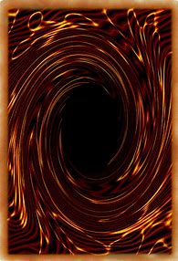

A Brief Introdution
Yugi-Oh is a card playing game based off of the anime with the same name. The anime started in 2001 and ever since fans have been playing the card game, having their own duels between eachother to prove who is the better duelist.
The Cards
| Blue Eyes White Dragon | ||
| Blue Eyes White Dragon is maybe the most iconic card of the entire series, known by many who don't watch the anime or play the game. It's great design and it's versetility in the game makes it one of the most powerful cards in the game. Find more out here. |  |
| El Shaddoll Construct | ||
| Shaddoll an archetype comprised primarily of dark monsters. Their focus is the Fusion Summon of the more powerful "El Shaddoll" monsters, which restrict or punish Special Summons. Find more out here. |
| Numeronius | ||
| The Numeron archetype focuses on obtaining ridiculously high ATK values (like the "Numeron" monsters) as well as effects that protect themselves and limit the opponent's actions. Find more out here. |